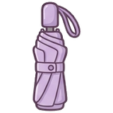
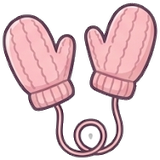
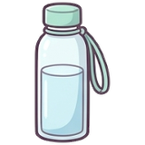
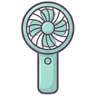
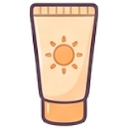

① 쌀쌀 + 퇴근길 비
10월 31일 (금) · 주간
포항 효곡동 → 남구 대송면
출근 07:00
 9°
9°체감 7° · 강수 10%

코트 입으세요
안에 얇은 니트
퇴근 19:00
 13°
13°강수 70% · 바람 4m/s


자켓 + 우산
저녁 6시부터 비
챙길 것

우산 · 마스크
미세먼지 나쁨
퇴근길(대송면) 마스크 쓰세요
›
네이버 날씨에서 자세히 보기
9°13°
우산 · 마스크 -3°
-3°
 -7°
-7°




물 · 손풍기 · 선크림